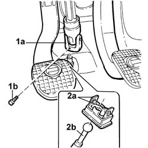
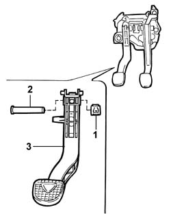

3330B26 CLUTCH PEDAL - R.R.
- Path
- Procedures > 33 BRAKES > 3330 HYDRAULIC BRAKING SYSTEM > 3330B PEDAL UNIT > 3330B26 CLUTCH PEDAL - R.R.
- Kind
- repair procedure (removal / refitting; the operation number is the code)
- Applies to
- engines: 2.0 TB, 2.4 20V, 2.4 JTD 10V, 2.4 JTD 20V; all production periods
- Interactive page
- https://sloeber94.github.io/elrnDB-lThss/en/#/78591
Applies to: engines: 2.0 TB, 2.4 20V, 2.4 JTD 10V, 2.4 JTD 20V; all production periods
 Removing
Removing
 Refitting
Refitting- Disconnect the negative battery terminal.
Applies to: engines: 2.4 JTD 10V, 2.4 JTD 20V; all production periods
Applies to: engines: 2.4 20V; all production periods
See in Op. 5580A38 Switch on clutch pedal for cruise control - R.R.
Applies to: engines: 2.0 TB; all production periods
See in Op. 5580A38 Switch on clutch pedal for cruise control - R.R.
Applies to: engines: 2.0 TB, 2.4 20V, 2.4 JTD 10V, 2.4 JTD 20V; all production periods
1. Release the steering column universal joint undoing the bolt fixing it to the steering box.
2. Working on the clutch pedal, release the two clips (2a) fastening the clutch master cylinder push rod (2b), then release it from the clutch pedal.

Applies to: engines: 2.0 TB, 2.4 20V, 2.4 JTD 10V, 2.4 JTD 20V; all production periods
1. Remove the spring fastening the clutch pedal retaining pin.
2. Release the clutch pedal retaining pin.
3. Remove the clutch pedal from the pedal assembly complete with the pedal return spring.

Applies to: engines: 2.0 TB, 2.4 20V, 2.4 JTD 10V, 2.4 JTD 20V; all production periods
Refitting
Removing- Position the clutch pedal complete with the pedal return spring.
- Fit the clutch pedal retaining pin and secure it using the special retaining spring.
- Press fit the clutch master cylinder push rod on the pedal.
- Position the steering column universal joint and secure it to the steering box by tightening the fixing bolt to the recommended torque.
 | Value - daNm | Fastening | Component | Ø |
|---|---|---|---|---|
. | 2 | Bolt | STEERING SHAFT MOUNTING | M8 |
Applies to: engines: 2.0 TB; all production periods
See in Op. 5580A38 Switch on clutch pedal for cruise control - R.R.
Applies to: engines: 2.4 20V; all production periods
See in Op. 5580A38 Switch on clutch pedal for cruise control - R.R.
Applies to: engines: 2.4 JTD 10V, 2.4 JTD 20V; all production periods
Applies to: engines: 2.0 TB, 2.4 20V, 2.4 JTD 10V, 2.4 JTD 20V; all production periods
- Connect the negative battery terminal.